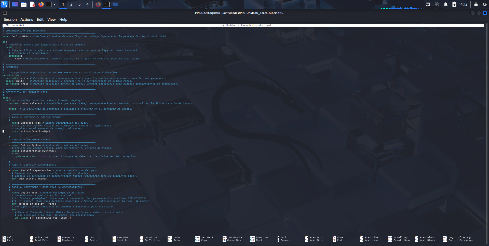
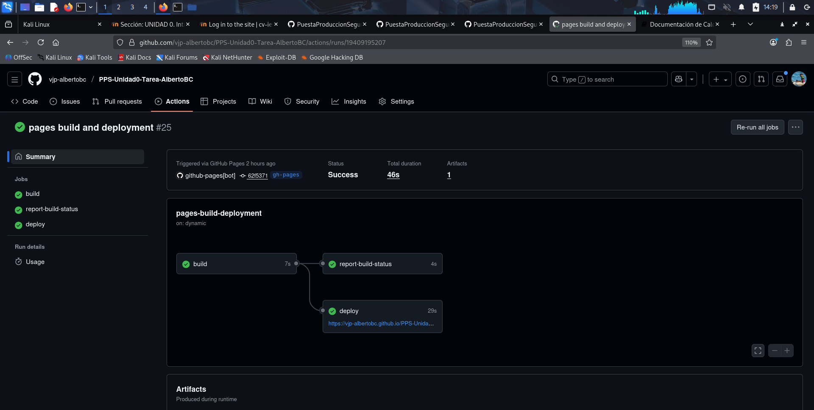

2. GitHub Actions + MkDocs
Este documento detalla el proceso de creación y comprobación del WorkFlow de GitHub Actions para la automatización de la documentación. El objetivo es que, con cada git push a la rama main, la documentación fuente (docs/ y mkdocs.yml) se compile y se publique automáticamente en la rama gh-pages.
2.1. Configuración de MkDocs
Antes de crear el WorkFlow, es necesario configurar el generador de sitios estáticos MkDocs.
2.1.1. Archivo requirements.txt
Se define la dependencia de MkDocs en el archivo requirements.txt para que el WorkFlow pueda instalarla:
# requirements.txt
mkdocs
2.1.2. Archivo de Configuración mkdocs.yml
Se crea y configura el archivo mkdocs.yml en la raíz del repositorio. Este archivo define el nombre del sitio, el tema y la estructura de navegación.
Nota: La estructura de navegación se actualizará a medida que se creen los archivos de documentación restantes.

2.2. Creación del WorkFlow de GitHub Actions
Se crea el archivo de WorkFlow en .github/workflows/deploy_docs.yml para definir los pasos de la Integración Continua (CI) que generarán y publicarán la documentación.
2.2.1. Archivo deploy_docs.yml
Este WorkFlow se dispara con cada push a la rama main, instala Python y MkDocs, y utiliza el comando mkdocs gh-deploy --force para construir y subir la documentación a la rama gh-pages.

2.3. Comprobación y Subida Inicial
Tras crear los archivos de configuración (mkdocs.yml, requirements.txt) y el WorkFlow, se realiza el commit y el push para disparar la primera ejecución del WorkFlow.
Bash
# Comprobamos los nuevos archivos (si aún no se han subido)
git add .github/workflows/CreacionDocumentacion.yml mkdocs.yml requirements.txt
git commit -am "Añadido WorkFlow de MkDocs y configuracion inicial"
git push origin main
2.3.1. Verificación en GitHub Actions
Se comprueba la pestaña Actions del repositorio en GitHub para verificar que el WorkFlow "Generar y Desplegar Documentación con MkDocs" se haya ejecutado y completado exitosamente.
